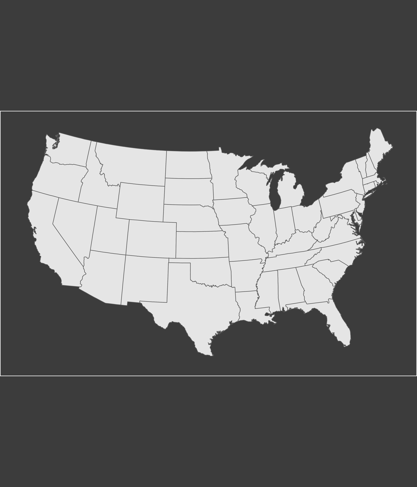

When making a geographical map, or any other visualization where I wanted to use a forced coordinate system), choosing the right aspect ratio to save my graphics has always been challenging. Lately, when participating in the map challenge, Cédric Scherer made me realize that I was really struggling with white borders around my plots when it came the time to export them. He was right! :smile:
One question though: always wondering about your white space, do you not care and avoid to play around with the aspect ratio or is it on purpose?
Let’s make a simple map of the USA to illustrate the problem. In a markdown document, the generated graph looks good (i.e. no extra border) because knitr is taking care of this for me (more on that later).
# Load the US shapefilestates<-st_as_sf(maps::map("state", plot =FALSE, fill =TRUE))p<-states%>%ggplot()+geom_sf(size =0.25)+#<<coord_sf(crs =2163)+theme( panel.border =element_blank(), axis.text =element_blank(), panel.grid =element_blank(), axis.ticks =element_blank(), plot.background =element_rect(fill ="#3c3c3c"), panel.background =element_rect(fill ="#3c3c3c"))p
When it comes time to save my plots, I usually use the PDF format file unless they contain too much point. In that case, I will use the PNG format. When saving a graph in a file, however, it is difficult to find the right aspect ratio when using coordinate system that forces a specified ratio between the physical representation of data units on the axes (ex.: coord_fixed(), geom_sf() or coord_equal()). To visualize the problem, I will save the previous plot using two different aspect ratios and then import them in my document to show you the difficulty of finding the right aspect ratio.
Aspect ratio of 7/4
Choosing an aspect ratio of 7/4 creates white borders on the sides of the plot.
Aspect ratio of 6/7
Choosing an aspect ratio of 6/7 creates white borders at the bottom and the top of the plot.

As it can be seen in the two figures above, there are two large white borders located either on the sides or above/below of the graph. It is because I have used geom_sf() which set automatically the aspect ratio of the plot to respect the chosen geographical coordinate system. Of course, I could play around with trials and errors to find the bestwidth and hight to use to save my plot.
But wait! There is a much better way to do it! :smirk: Actually, I found out there was a hidden gem in knitr that allows cropping (using either pdfcrop or convert functions) to remove borders around an image. In fact, this is the function that is used to automatically remove borders around images when knitting an R Markdown document in R (see the initial plot of this post without borders). The function knitr::plot_crop(x) (where x is the filename of the plot to be cropped) will trim any existing images on your hard drive.
First, let’s create our plot in PDF format and use knitr::plot_crop() to remove the borders.
At this point, the borders have been removed from the original PDF. But what if you want to export this PDF into a bitmap image? This can be achieved using a combination of pdftools::pdf_render_page() and png::writePNG(). pdftools::pdf_render_page() will take the filename of a PDF file and render into a raw bitmap array whereas png::writePNG() will actually save the bitmap into a file.